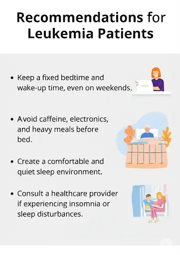
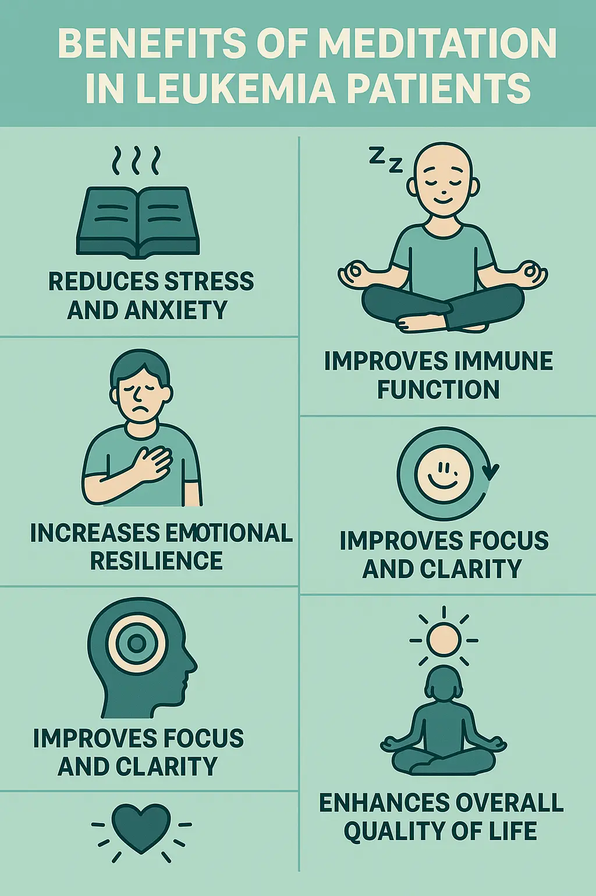

Nausea Management
⚠️ Seek Immediate Medical Help for Nausea If:
- Nausea lasts more than 24–48 hours despite medication
- Repeated vomiting or inability to keep fluids down
- Signs of dehydration: dry mouth, dark urine, dizziness
- Vomiting blood or material that looks like coffee grounds
- Severe abdominal pain or bloating
- High fever along with nausea (possible infection)
- Confusion, drowsiness, or extreme weakness
Follow Dietary Strategies:
- Snacking on dry crackers before rising
- Eating small, light, frequent meals to aid digestion
Behavior and Lifestyle Adjustments:
- Sitting upright after eating
- Avoid combining hot and cold foods
- Identify and avoid known nausea triggers
- Wear loose clothing
- Practice deep breathing exercises Video 6

Foods to Avoid:
- Fatty, greasy, fried, spicy, very sweet foods
- Strong-smelling foods
- Carbonated beverages like Pepsi or Coca-Cola

If the nausea is severe, seek immediate medical attention.
Fatigue Management
⚠️ Seek Immediate Medical Help for Fatigue If:
- Sudden or extreme fatigue worsening rapidly
- Fatigue interfering with daily activities
- Fatigue with chest pain, shortness of breath, or dizziness
- Accompanied by fever, chills, or signs of infection
- Pale skin, fast heartbeat (may indicate anemia)
- Unresponsiveness, confusion, or fainting
- Fatigue not improved by rest or lasting > few days
Physical Activities:
-
Walking -
Video 4
- Duration: 5–10 minutes
- Intensity: Moderate
- Rest after each 5–10 min; do not strain
- Leg Swings - Video
- Wrist Circles - Video
- Ankle Rotations - Video
- Shoulder Shrugs and Rolls - Video
- Elbow Flexion & Extension - Video
Yoga / Pranayam
-
Anulom Vilom (Alternate Nostril Breathing) -
Video
-
How it's done:
- Sit comfortably with a straight spine.
- Close your right nostril with your right thumb.
- Inhale slowly through your left nostril.
- Close the left nostril with your ring finger, release the right nostril.
- Exhale slowly through the right nostril.
- Then inhale through the right nostril, close it, and exhale through the left.
-
Benefits:
- Calms the nervous system
- Improves focus and mental clarity
- Reduces stress, anxiety, and blood pressure
- Balances both hemispheres of the brain (left and right)
-
How it's done:
-
Kapal Bhati (Skull Shining Breath) -
Video
-
How it's done:
- Sit in a comfortable meditative posture.
- Take a deep breath in (inhalation is passive).
- Forcefully exhale through the nose by contracting your abdominal muscles (exhalation is active).
- Inhale automatically after each exhalation. Usually done in rounds of 30–60 pumps per minute, followed by rest and deep breathing.
-
Benefits:
- Detoxifies lungs and organs
- Stimulates digestion and metabolism
- Improves blood circulation
- Energizes the body and mind
- Clears nasal passages and sinuses
-
How it's done:
Nutrition Support
DISCLAIMER: The dietary tips provided in MedPANDA are general. Always
follow your dietician’s personalized advice.
- Small, frequent meals
- High-calorie, protein-rich foods: nuts, cheese, yogurt, eggs, beans, dal

Regular Sleep Schedule
Ensure 8 hours of sleep daily to support recovery and overall well-being.


Meditation Video 7
Basic Steps:
- Choose a quiet space
- Sit or lie down comfortably
- Close your eyes, breathe deeply, and relax
- Focus on breath or use a mantra/visualization
- Be present, observe thoughts without judgment
- Start with 5–10 minutes and increase gradually
- End gently and stretch

üßò Tips: Be consistent. Patience and practice matter most.
If the nausea is severe, seek immediate medical attention.